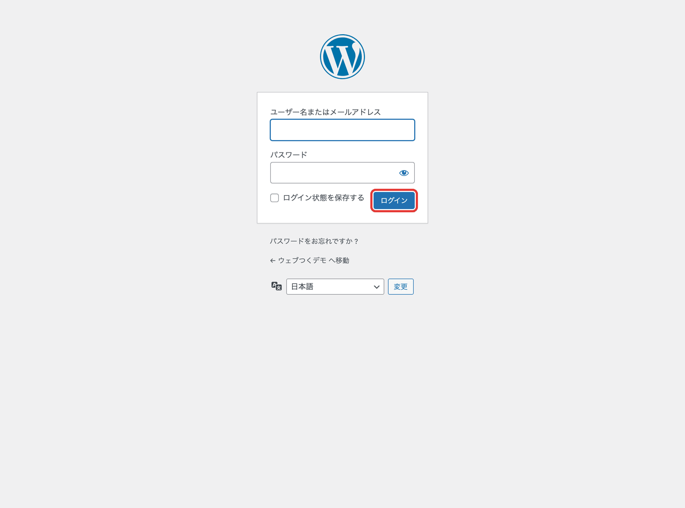
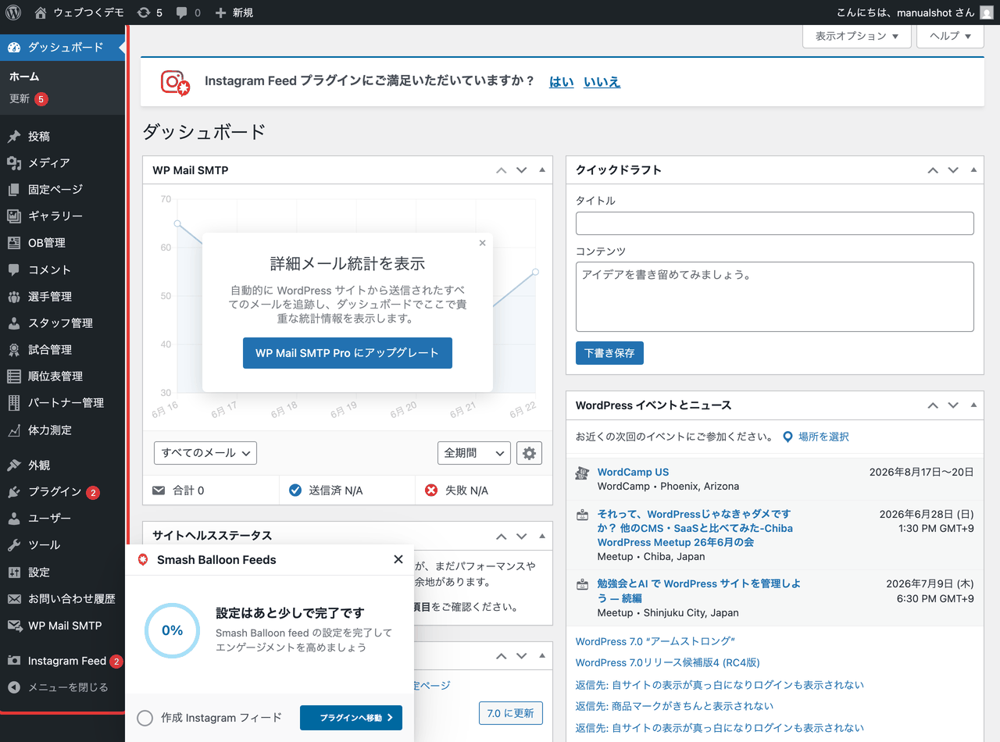
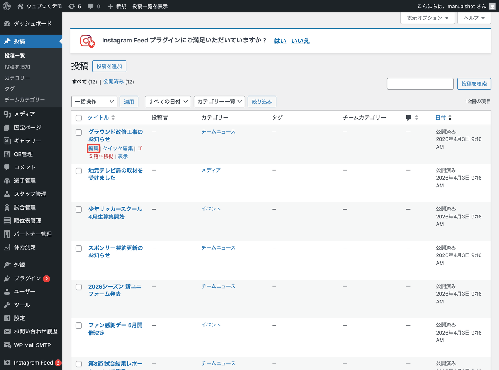
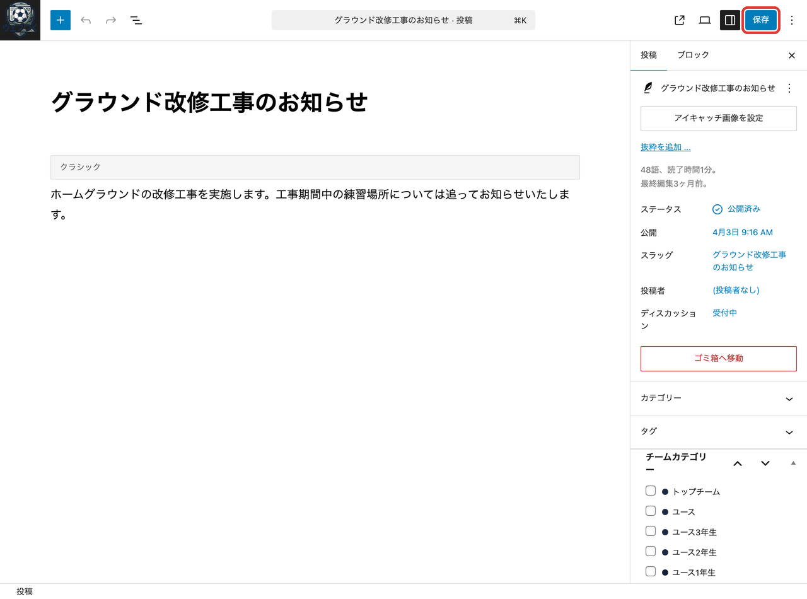
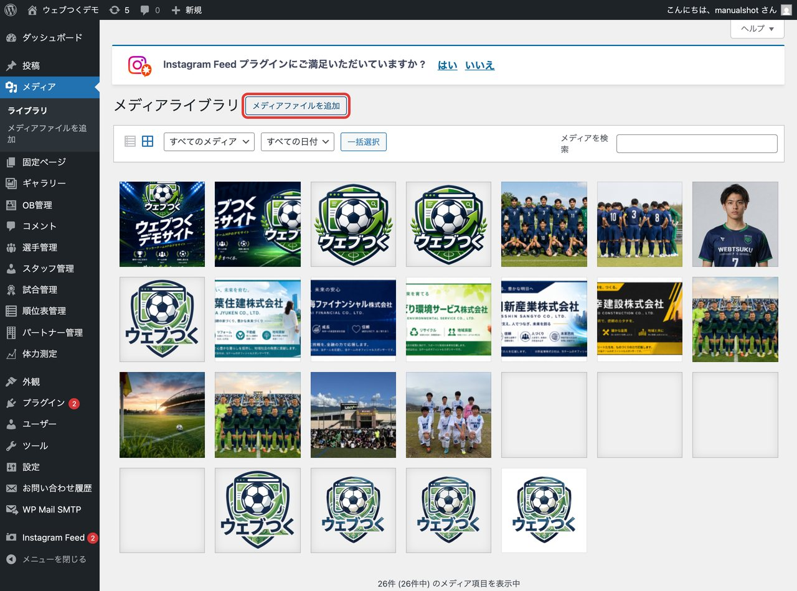
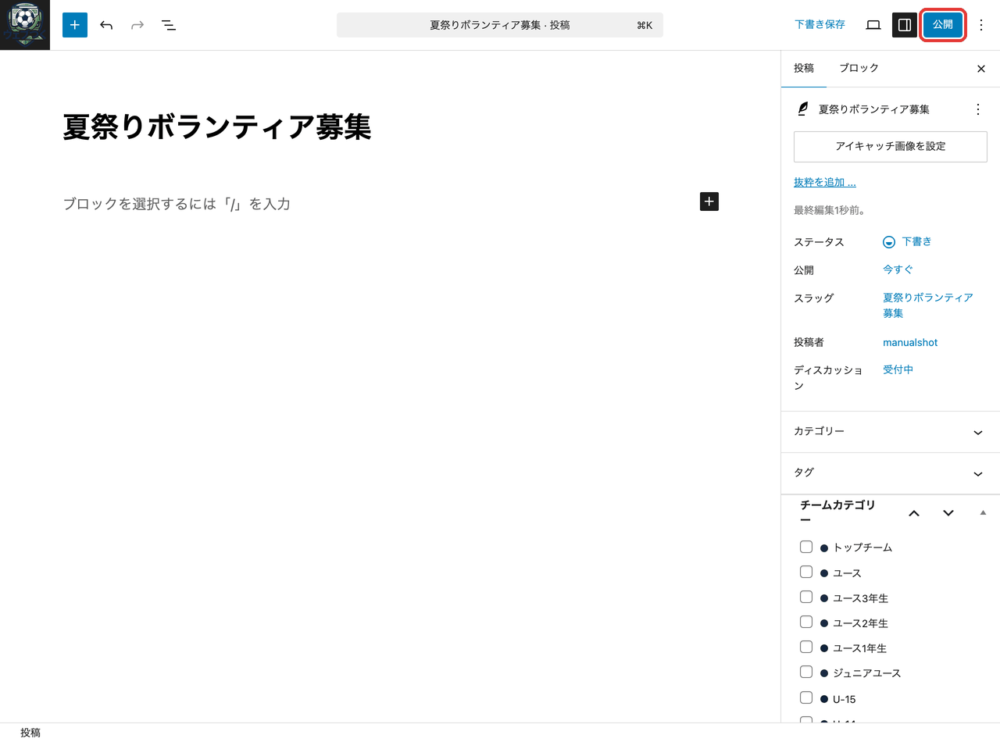

🌐 ウェブつく サポートマニュアル
ホームページの操作
ログイン・記事の編集・写真の差し替え・新規投稿など、WordPress管理画面の基本操作をまとめました。
試合結果・お知らせは LINEから投稿するのが一番かんたんです。このマニュアルは、ブラウザから直接ホームページを編集したいときの操作です。
🔑
ログイン情報（アドレス・ユーザー名・パスワード）が分からないときは、LINEで「お問い合わせ」と送ってください。
1. ログインする
1
管理画面を開いてログイン
- ブラウザで管理画面のアドレスを開きます（例：
https://あなたのサイト/wp-admin/）。 - ユーザー名（またはメールアドレス）とパスワードを入力します。
- 「ログイン」ボタンを押します。

💡
「ログイン状態を保存する」にチェックを入れると、次回から入力を省けます。
2. 管理画面の見方
2
ダッシュボードと左メニュー
ログインすると最初に出るのが「ダッシュボード」です。操作は基本的に左側のメニューから行います。
- 投稿：お知らせ・ブログ記事の管理
- メディア：写真・画像の管理
- そのほか、試合管理・選手管理などチーム専用メニュー

3. 記事を編集する
3
編集したい記事を開く
- 左メニューの「投稿」→「投稿一覧」を開きます。
- 記事タイトルにマウスを合わせると出る「編集」をクリックします。

4
本文を直して保存する
本文をその場で書き換えられます。直したら、右上の「更新」（新規の場合は「公開」）を押すと反映されます。

⚠️
「更新」を押さないと保存されません。編集したら必ず押してください。
4. 写真を変える
5
アイキャッチ画像（記事のトップ写真）
- 編集画面の右側にある「アイキャッチ画像を設定」を押します。
- 写真を選ぶ、または新しい写真をアップロードして「設定」。
- 最後に「更新」で保存します。

6
写真をまとめて管理（メディア）
左メニューの「メディア」で、アップロード済みの写真を一覧・追加できます。「メディアファイルを追加」から新しい写真を登録できます。

📷
写真は明るく横向きのものがおすすめです。大きすぎる場合も自動で調整されます。
5. 新しい記事を作る
7
ブラウザから新規投稿
- 左メニューの「投稿」→「新規追加」を開きます。
- 上にタイトル、下に本文を入力します。
- 必要なら写真やアイキャッチ画像を設定します。
- 右上の「公開」を押すとサイトに掲載されます。

💡
すぐ公開したくないときは「下書き保存」。試合結果・お知らせはLINEからの投稿のほうが簡単です。